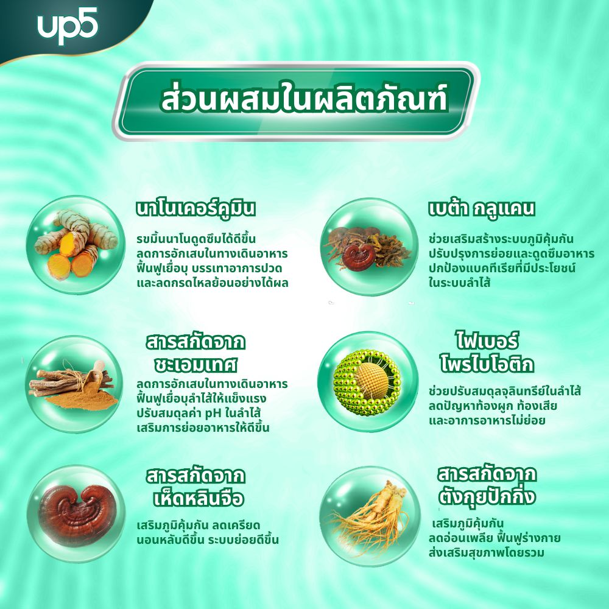

Up5 – โซลูชันทางโภชนาการเพื่อการย่อยอาหาร อย่างครบวงจรจากสมุนไพรธรรมชาติ
13/5/2025
สุขภาพของระบบย่อยอาหารมีบทบาทสำคัญในการรักษาพลังงาน ภูมิคุ้มกัน และคุณภาพชีวิต
โดยเฉพาะในกลุ่ม
วัยกลางคนและผู้สูงอายุในปัจจุบัน มีผู้คนจำนวนมากประสบปัญหาสุขภาพ เช่น โรคกระเพาะอาหารอักเสบ
กรด
ไหลย้อน ลำไส้แปรปรวน หรืออาการท้องผูกเรื้อรัง
ส่งผลให้ตลาดให้ความสนใจเพิ่มขึ้นต่อผลิตภัณฑ์และวิธีดูแล
ระบบย่อยอาหารที่มีแหล่งกำเนิดจากธรรมชาติ
UP5 – ผลิตภัณฑ์นมสูตรสมุนไพรที่ผลิตในประเทศไทย
กำลังได้รับความนิยมจากผู้เชี่ยวชาญและผู้บริโภคจำนวน
มาก เนื่องจากแนวทางที่ปลอดภัย ยั่งยืน และมีพื้นฐานทางวิทยาศาสตร์
1. การผสานระหว่างแพทย์แผนโบราณกับเทคโนโลยีสมัยใหม่
UP5 ผลิตที่โรงงาน RSS Biotech Innotech ประเทศไทย ซึ่งได้รับการรับรองมาตรฐาน FDA
และนำเทคโนโลยี
โภชนาการสมัยใหม่จากสหรัฐอเมริกามาใช้ ผลิตภัณฑ์นี้ไม่เพียงแต่ให้สารอาหารที่จำเป็น
แต่ยังผสมผสาน
สมุนไพรแผนโบราณที่มีสรรพคุณช่วยในการย่อยอาหาร บรรเทาเยื่อบุทางเดินอาหาร
และปรับสมดุลจุลินทรีย์ใน
ลำไส้
ส่วนประกอบเด่นของ UP5 ได้แก่:
- เคอร์คูมินจากขมิ้นชัน – ช่วยฟื้นฟูเยื่อบุกระเพาะอาหาร ลดการอักเสบ
- ชะเอมเทศ และตังกุย (ตังกุยแซม) – ช่วยปรับสมดุลกรดในกระเพาะ ลดอาการแสบร้อนกลางอกและกรด
ไหลย้อน - เห็ดหลินจือ – เสริมสร้างภูมิคุ้มกัน และช่วยให้นอนหลับดีขึ้น
- โพรไบโอติกส์ชนิดมีชีวิต และพรีไบโอติกส์ – ช่วยปรับสมดุลจุลินทรีย์ในลำไส้
และส่งเสริมการขับถ่ายให้
ดีขึ้น
สูตรพิเศษ ปราศจากแลคโตส เหมาะสำหรับผู้ที่มีร่างกายไวต่อสารหรือแพ้นมวัว
2. การสนับสนุนอย่างครอบคลุมสำหรับผู้ที่มีปัญหาทางเดินอาหารเรื้อรัง
จากการเปิดเผยของตัวแทนแบรนด์ Up5 ได้รับการออกแบบมาเพื่อกลุ่มผู้ใช้งานดังนี้:
- ผู้ที่เป็นโรคกรดไหลย้อน กระเพาะและลำไส้อักเสบ มีอาการเรอเปรี้ยว คลื่นไส้ นอนไม่หลับ
- ผู้ที่เป็นโรคลำไส้อักเสบเรื้อรัง ลำไส้แปรปรวน หรือท้องผูกเป็นประจำ
- ผู้สูงอายุหรือวัยกลางคนที่ต้องการเสริมการย่อยอาหาร นอนหลับดีขึ้น และเพิ่มภูมิคุ้มกัน
- ผู้ที่เพิ่งฟื้นจากอาการป่วย หรือมีระบบย่อยอาหารอ่อนแอเนื่องจากการใช้ยาต่อเนื่องเป็นเวลานาน
กลไกการออกฤทธิ์ของผลิตภัณฑ์มุ่งเน้นไปที่การปกป้องระบบย่อยอาหารใน 3 ระดับ ได้แก่ บรรเทา ฟื้นฟู
และปรับ
สมดุล หลังจากใช้เป็นประจำ 2–4 สัปดาห์ หลายคนพบว่าอาการของความผิดปกติในการย่อยอาหารและคุณภาพ
การนอนหลับดีขึ้นอย่างเห็นได้ชัด
3. ผู้ใช้จริงให้ความคิดเห็นในเชิงบวก
คุณ... (อายุ...ปี) เคยประสบปัญหาโรคกรดไหลย้อนเรื้อรัง ได้แบ่งปันว่า:
"ผมเคยใช้ยาลดกรดหลายชนิด แต่พอหยุดกินก็กลับมาเป็นอีก หลังจากดื่มนม Up5
อย่างสม่ำเสมอเป็นเวลากว่า 1
เดือน อาการแสบร้อนในตอนกลางคืนก็ดีขึ้นอย่างชัดเจน และผมเริ่มนอนหลับได้ดีขึ้น"
คุณ... (อายุ...ปี) – พนักงานออฟฟิศที่มีปัญหาท้องอืดและระบบขับถ่ายไม่ปกติ เผยว่า:
"สิ่งที่ทำให้ฉันประหลาดใจคือรสนมดื่มง่าย ไม่หวานจัดเหมือนนมผงทั่วไป ดื่มทุกเช้าเป็นประจำ
ฉันรู้สึกว่าท้องเบา
สบาย ขับถ่ายสม่ำเสมอ และไม่รู้สึกเหนื่อยล้าหลังมื้ออาหารอีกต่อไป"
ด้วยคุณภาพที่ยอดเยี่ยม UP5 ได้กลายเป็นตัวเลือกอันดับหนึ่งของลูกล้านคนในการดูแลสุขภาพระบบย่อยอาหาร
4. ผลิตตามมาตรฐาน และวางจำหน่ายในหลายประเทศ
ปัจจุบัน Up5 มีวางจำหน่ายแล้วในประเทศไทย ฟิลิปปินส์ และกัมพูชา โดยจัดจำหน่ายผ่านร้านขายยา
ร้านเพื่อ
สุขภาพ และช่องทางออนไลน์ ผลิตภัณฑ์ผ่านการตรวจสอบคุณภาพ และได้รับอนุญาตให้จำหน่ายอย่างถูก
กฎหมาย
ตัวแทนแบรนด์แนะนำให้ผู้ใช้ดื่มวันละ 2 แก้ว คือช่วงเช้าและเย็น
เพื่อให้ได้ผลลัพธ์ที่ดีที่สุดในการดูแลระบบย่อย
อาหาร
ท่ามกลางสถานการณ์ที่โรคเกี่ยวกับระบบทางเดินอาหารมีแนวโน้มเกิดกับคนอายุน้อยมากขึ้นและซับซ้อนมากขึ้น
โภชนาการที่ช่วยเสริมระบบย่อยอาหารจากสมุนไพรกำลังกลายเป็นทางเลือกที่ได้รับความสนใจอย่างแพร่หลาย
Up5 โดดเด่นด้วยสูตรที่อ่อนโยนต่อกระเพาะอาหาร กลไกการทำงานที่ครอบคลุม
และความปลอดภัยเมื่อต้องใช้ใน
ระยะยาว
ด้วยแนวทางที่ผสานระหว่างการแพทย์แผนโบราณและเทคโนโลยีสมัยใหม่
ผลิตภัณฑ์นี้จึงเป็นทางเลือกที่เหมาะ
สำหรับผู้ที่มองหาวิธีดูแลระบบย่อยอาหารและสุขภาพโดยรวมอย่างยั่งยืนในทุกวัน